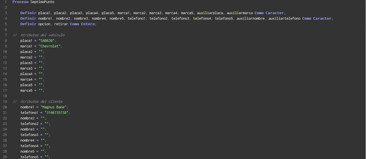
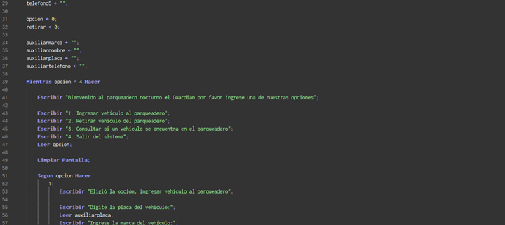
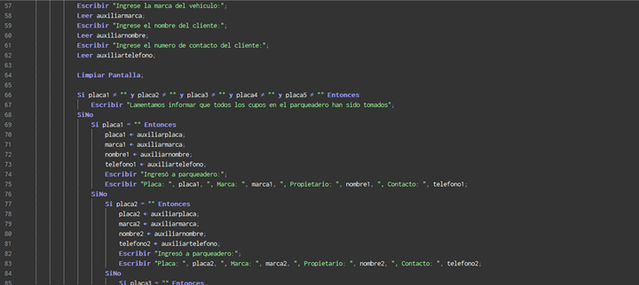
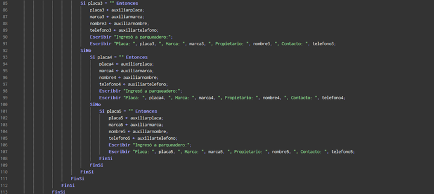
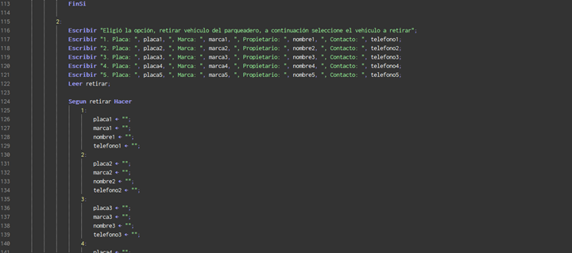
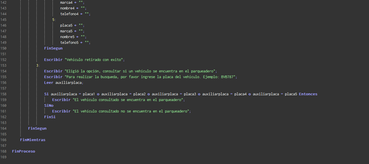

3.7 El parqueadero "El guardián" presta sus servicios de parqueadero nocturno para los usuarios del barrio y requiere una aplicación que permita registrar los vehículos que se cuidan en estas instalaciones. Se sugiere que el parqueadero tenga los atributos del vehículo como son, placa y marca, y los datos del cliente como son nombre completo y número de teléfono. Para cada vehículo se debe permitir la opción de ingresar al parqueadero, retirar del parqueadero y consultar si un vehículo se encuentra en el parqueadero. Recuerde que el sistema debe terminar cuando el usuario así lo indique. Tenga en presente que el parqueadero solo puede almacenar máximo 5 vehículos.





